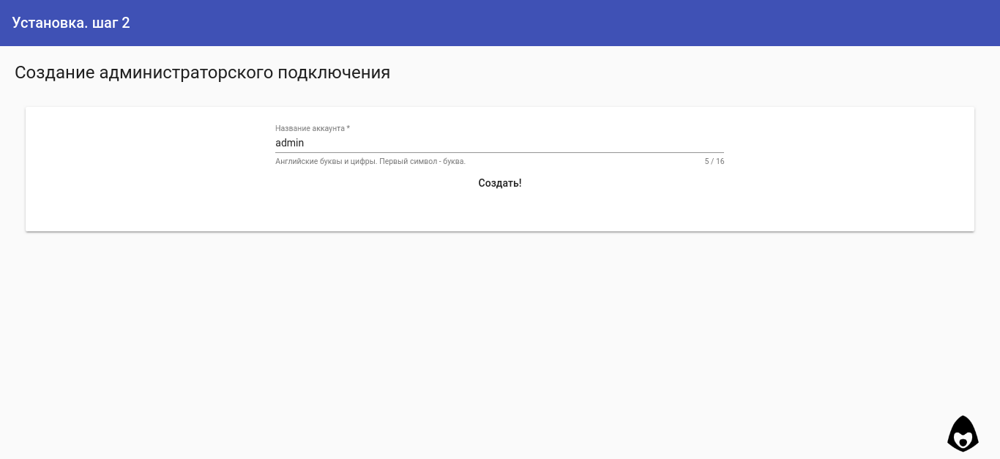
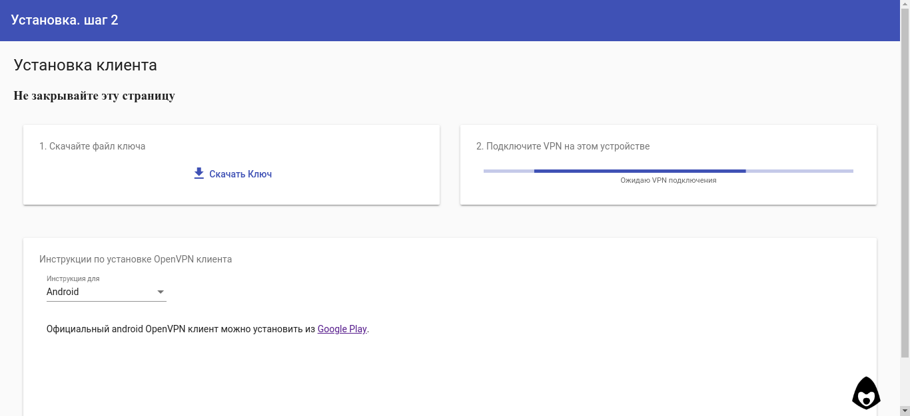
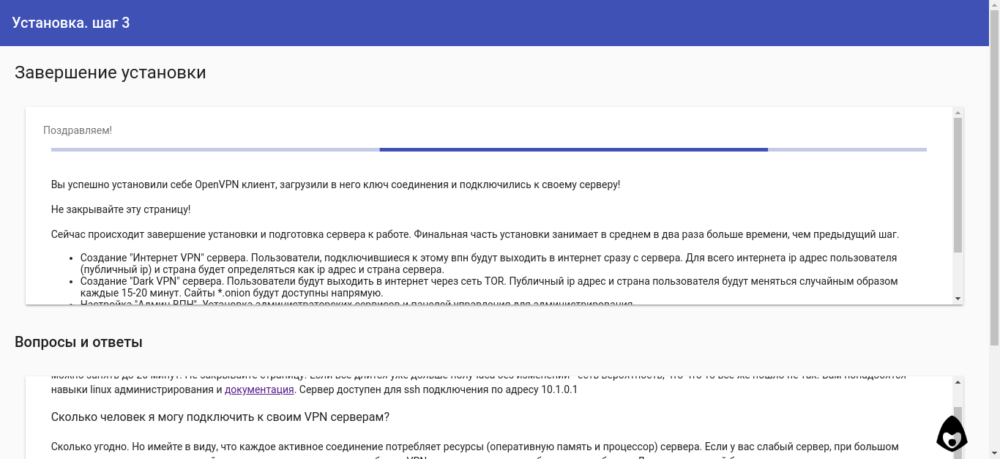

Установка¶
Системные требования¶
Для простой установки требуется OS Ubuntu/Debian, root доступ, доступ в интернет, однако обязательные зависимости проекта - это iptables-persistent, tor, nodejs, easy-rsa, openvpn. Таким образом в режиме ручной установки систему можно установить на любое устройство-систему, поддерживающие необходимые пакеты.
Простая установка (по умолчанию)¶
Простая установка расчитана на быстрое разворачивание минимальной впн инфрастуктуры на чистом сервере. Процесс разделён на несколько шагов, для гарантии выполнения каждого предыдущего.
Старт¶
После ssh подключения, используйте скрипт установки через wget
wget -qO- https://raw.githubusercontent.com/abrakadobr/vpnface_lite/v1.0.3/install.sh | bash
или curl
curl -o- https://raw.githubusercontent.com/abrakadobr/vpnface_lite/v1.0.3/install.sh | bash
Скрипт устанавливает пакеты iptables-persistent, easy-rsa, openvpn, git, tor и nginx из системных репозиториев, после чего устанавливает node version manager и через него устанавливает nodejs v10 и пакеты forever и forever-service. Скрипт клонирует репозиторий проекта, запускает в нём установку зависимостей npm, устанавливает сервис vpnface_lite и стартует его.
По умолчанию скрипт клонирует файлы проекта в /opt/vpnface_lite и хранит данные по пути /opt/vpnface_ca.
Во время установки выйдут 2 вопроса от пакета iptables-persistent о сохранении текущих настроек. Если у вас чистый сервер без каких-либо предварительных настроек - на оба можно ответить NO - в дальнейшем установка автоматически обновит и сохранит конфигурации. Если у вас сервер имеет какие-то настройки iptables - заранее позаботьтесь о их сохранности.
По завершению стартовых действия скрипт выводит приглашение завершить установку через веб интерфейс.
Шаг 1¶

Веб интерфейс запрашивает у пользователя публичный ip-адрес сервера. Скрипт установки пытается определяет адрес для автоматической подстановки через данные http запроса к веб-интерфейсу. После подтверждения ip адреса, скрипт через консоль (ip -4 -o address) ищет интерфейс с указаным айпи адресом и сохраняет сетевые данные в json файл ip.json.
Далее создаётся Административный VPN сервер, и инсталлятор переходит на следующий шаг:
Шаг 2¶
На втором шаге веб установки пользователю предлагается создать ключ для подключения к Административному VPN серверу.
После чего инсталятор переходит в режим ожидания VPN подключения, предлагая пользователю скачать и установить OpenVPN клиент, и созданный на предыдущем шаге ключ соединения.
В это время скрипт зацикленно делает jsonp запрос на адрес http://10.1.0.1/api/ping ожидая ответа, пока пользователь устанавливает и подключает VPN. Когда ответ успешно получен, скрипт автоматически переходит к следующему шагу по внутреннему vpn адресу http://10.1.0.1:8808
Шаг 3¶
При первом переходе по внутреннему адресу, скрипт автоматически запускает завершение установки.
Устанавливаются Интернет VPN и Dark VPN сервера, конфигурируются tor и nginx. Настраивается файрвол iptables, и так как на этом этапе мы уже уверены, что пользователь успешно подключился через администраторский vpn, на уровне iptables сервер закрывается от любого внешнего доступа, кроме трёх впн портов и конфигурация файрвола сохраняется с помощью iptables-persistent пакета.
По завершению всех действий пользователь автоматически редиректится в основную панель управления по адресу http://10.1.0.1.
Установка с настройкой сертификатов или путей¶
Один из случаев полу-автоматической установки - установка на чистый сервер, с необходимостью настроить данные сертификации или пути установки. В этом случае достаточно выполнить следующие шаги:
- скачать файлы проекта
git clone https://github.com/abrakadobr/vpnface_lite.git /etc/vpnface_lite- отредактировать файл
/etc/vpnface_lite/install.shс указанием необходимого пути установки и отключения выкачивания файлов- отредактировать файл
/etc/vpnface_lite/conf.jsс указанием необхомого пути корневой директории данных, и данных сертификатов (Файл конфигурации conf.js)- после редактирования запустить файл
/etc/vpnface_lite/install.shи продолжить простую установку (Шаг 1)
Ручная установка¶
В случае, если конфигурация автоматической установки не устраивает, существует несколько возможных путей конфигурации. Помимо скачивания файлов проекта для полноценной работы системы требуется:
- Установить и настроить пакет
tor(Конфигурация TOR)- При необходимости установить и настроить пакет
nginx(Конфигурация NGINX)- Установить
NodeJS v10(NodeJS)- Если необходимо, создать и настроить службу
vpnface_liteдля файлаvpnface_lite/server.js(Сервис vpnface_lite)- Настроить файрвол
iptables/ufw/otherна правильную маршрутизацию трафика и доступы (Iptables)
Установка панели управления на работающий сервер¶
Другой случай, в котором автоматическая настройка системы может не подойти - это подключение панели управления ключами к существующим и уже работающим OpenVPN серверам, или установка системы на уже работающий в определённой конфигурации сервер. В этом случае шаги будут следующие:
- скачать файлы проекта
git clone https://github.com/abrakadobr/vpnface_lite.gitв необходимую директорию- отредактировать файл
vpnface_lite/conf.jsс указанием необхомого пути корневой директории данных, данные сертификатов и серверов в этом случае не имеют накакого значения. (Файл конфигурации conf.js)- настроить директорию данных по стуктуре VPNFace Lite. (Директория данных)
- дополнить easy-rsa скрипты для корректной блокировки-разблокировки ключей (Центр ключей <S>_ca)
- при необходимости, перенастроить OpenVPN сервера, с указанием порта менеджмента (Серверная структура /etc/openvpn/)
- создать файл
ip.jsonв папке данных с описанием сетевой стуктуры. (Сетевые настройки ip.json)- создать файл
servers.jsonв папке данных с описанием серверов (База данных servers.json)- настроить проксирование веб-панели управления с порта 8808 на необходимые. (Конфигурация NGINX)
- установить
nodejs 10+и настроить запуск сервера по необходимости в виде службы, или как-то ещё. (Сервис vpnface_lite)
VPNFace при старте проверяет установку по файлам ip.json и servers.json, и в зависимости от этого переходит в режим установки или обычной работы. Таким образом, создание этих файлов с корректными данными позволит пропустить автоматическую установку, и запустить систему в рабочем режиме. Подробную информацию о *.json файлах, структуре директорий и дополнительных скриптах смотрите в разделе Технические детали